Jennifer & Laurent
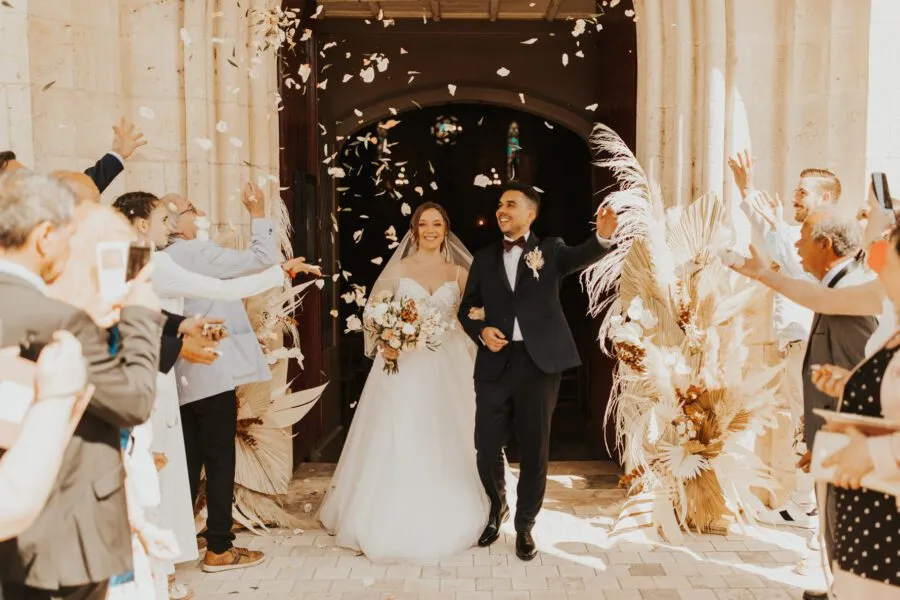
Après une demande en mariage sur une petite plage vers la pointe du cap ferret en face de la dune du Pyla, Jennifer et Laurent ont organisé leur mariage dans ce magnifique Château de Garde à Moulon.
Le moment qu’ils attendaient tant était l’échange des alliances à l’Eglise. Cette bénédiction a été d’une grande douceur et solennelle. Entre les violonistes et la cantatrice, la cérémonie a été particulièrement émouvante. Direction le château dans cette belle décapotable pour une soirée pleine de saveurs gustatives et musicales.
Les invités ont pu profiter d’un saxophoniste, d’animations culinaires uniques autour des vignes et de la piscine. On peut le dire, l’ambiance et le cadre exceptionnel ont donné l’énergie que les mariés attendaient !
Les lumières douces et orangées étaient parfaites pour mettre en évidence leur amour et la convivialité de ce mariage !
« Alexandra, la perle rare qu'il vous faut pour organiser et vivre votre mariage !Tant par son professionnalisme, son écoute et sa bienveillance elle a été une épaule sur qui se reposer lors de la préparation de notre mariage mais aussi le Jour J qui fut grâce à elle exceptionnel !Elle a su nous conseiller à chaque étape et quels beaux moments passés avec elle lors de nos réunions !N'hésitez pas à faire appel à Alexandra de Lovely day event pour organiser votre mariage. Elle est magique ! »Jennifer & Laurent
par Ghania Iratni


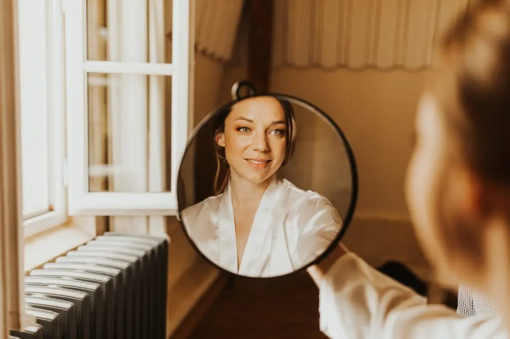


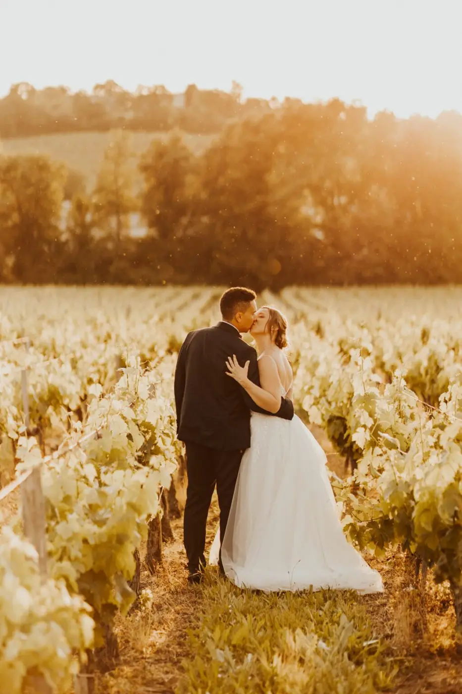
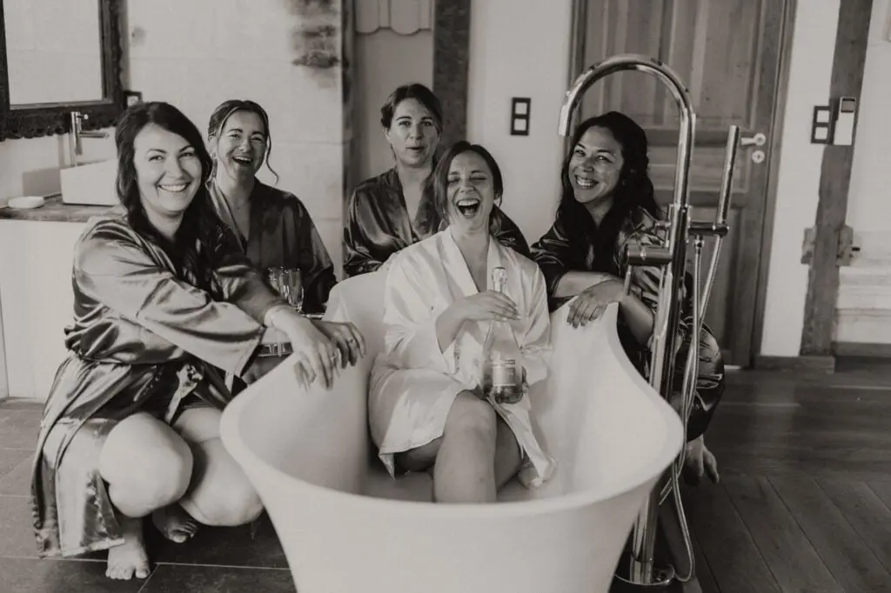


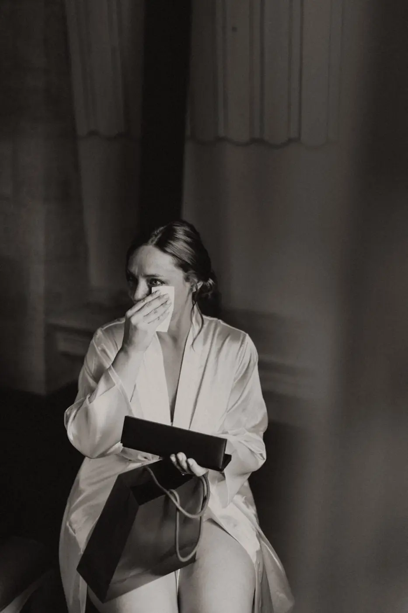
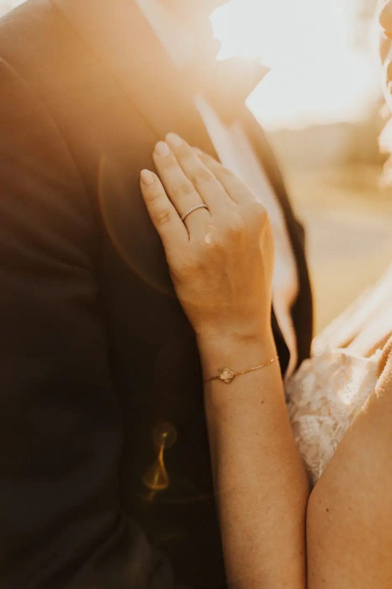


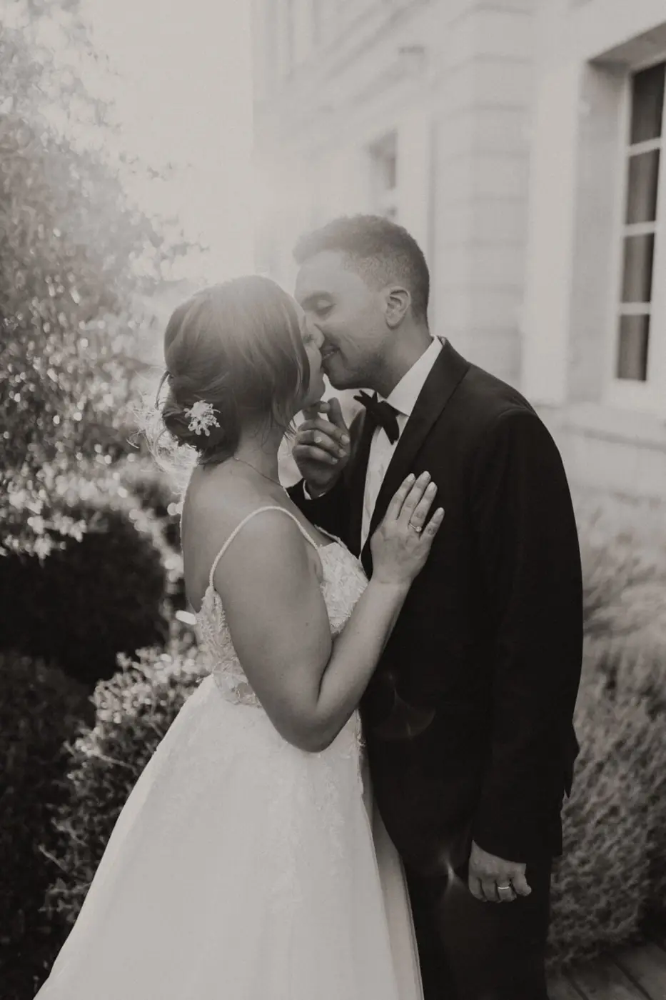
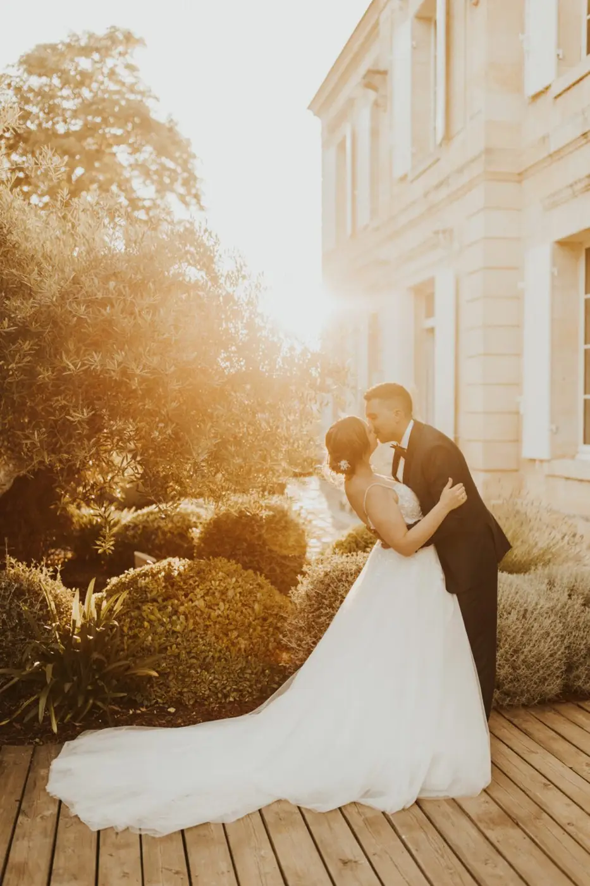


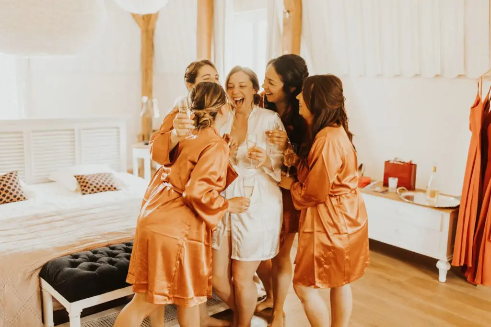

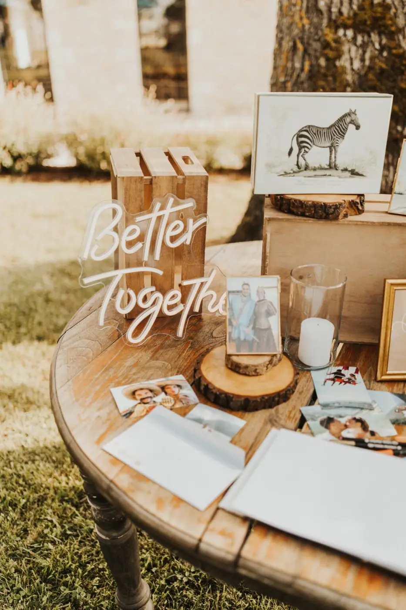
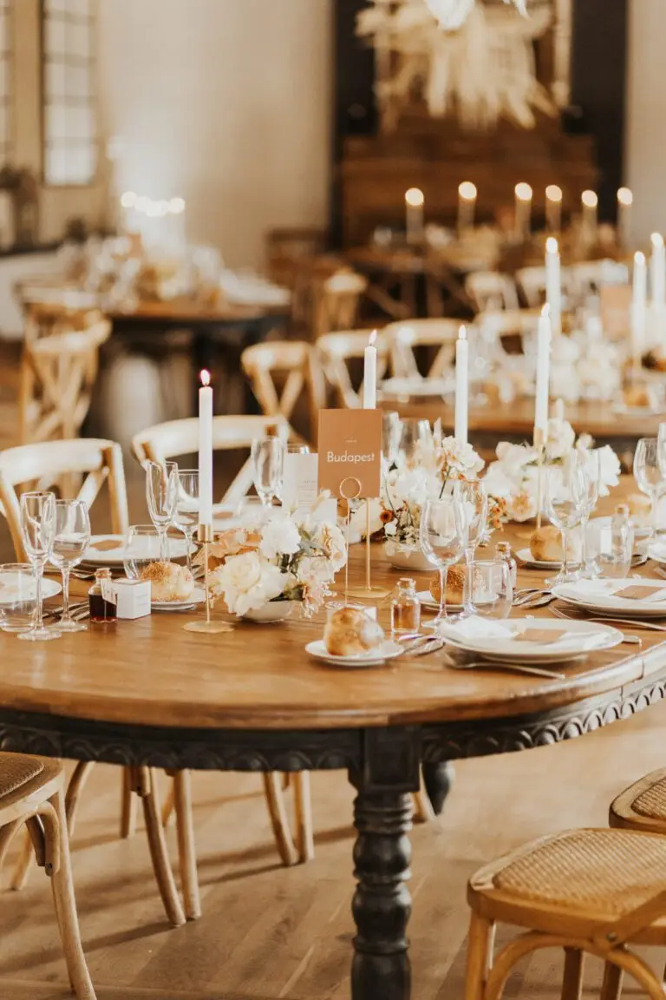
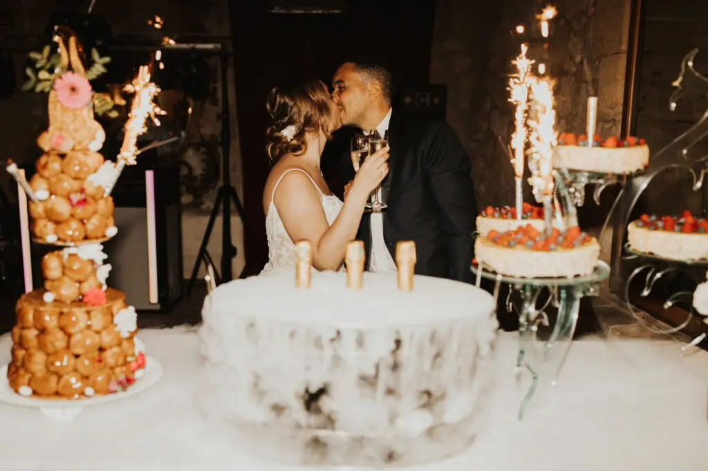
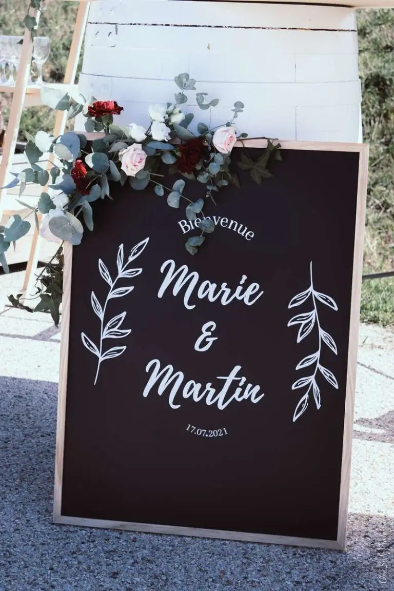
Marie & Martin
Sous le soleil étincelant du 17 juillet 2021, Marie et Martin, deux frenchies d’adoption, se sont unis près du vignoble du Château d’Arche à Sauternes en Gironde . Un…
Lire leur histoire
Maï & Rufus
Deux cœurs, une âme, lors du 25 juin 2022, Maï et Rufus se sont dit « Oui » en Gironde. C’est avec joie et émotions que leur cérémonie laïque a eu lieu au domaine de…
Lire leur histoire